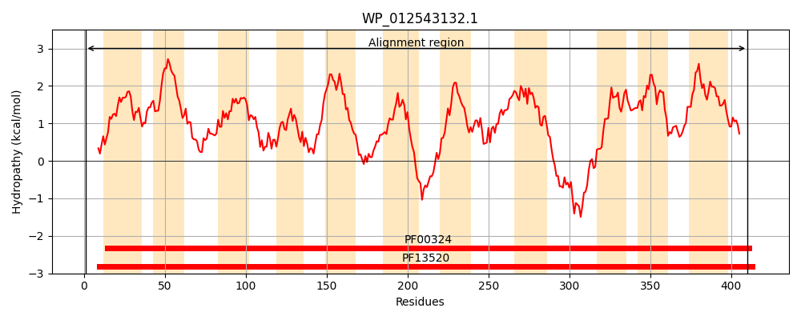
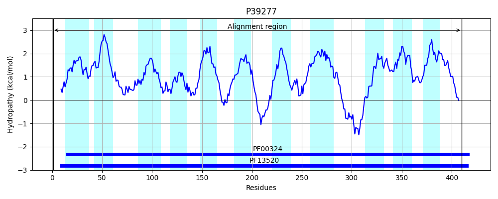
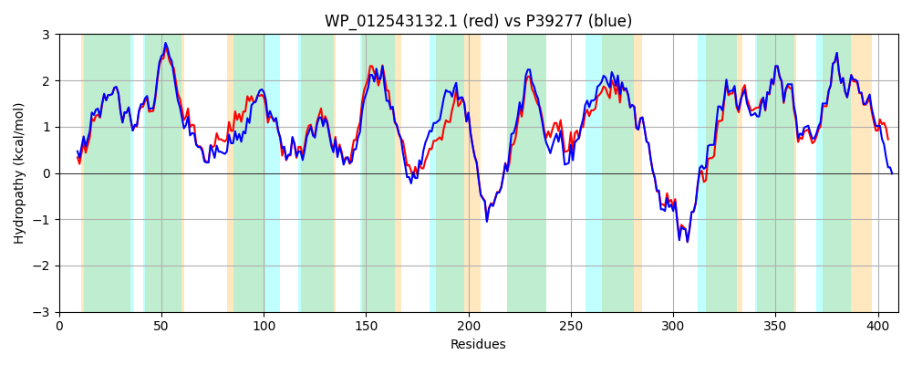

Hit Accession: P39277
Hit TCID: 2.A.3.13.1
Hit Description: gnl|BL_ORD_ID|10250 gnl|TC-DB|P39277|2.A.3.13.1 Inner membrane protein yjeH - Escherichia coli.
Mach Len: 410
e:0.000000
Query TMS Count : 11
Hit TMS Count: 11
TMS-Overlap Score: 9.800000
Predicted Substrates:CHEBI:6829;methionine
BLAST Alignment:
Score: 1794 , Bit scores: 695 bits, E-value: 0.0e+00, Alignment length: 410, Percentage identity: 84
Query: 1 MSGLKQELGLGQGVGLLSTSLLGTGVFAVPALAALVAGDNSLWAWPLLILLVFPIAIVFALLGRHFPSAGGVAHFVDMAFGPRLASVTGWLFLSVIPVGLPAALHIATGFGQALFGWHDAQLLLAELGTLAIVWWIGSRGASSSANLQTLVAVLIVALIVAVWWRGGISPAQIPFPALTEIDHGQLFSALSVMFWCFVGLEAFAHLASEFKHPERDFPRALMIGLLLAGSVYWACTVLVLHFHAFGEEMAAAASLPNIVVRLFGVEALWVACVIGYLACFASLNIYIQSFARLVWSQAQHKPESYLARLSPRQIPRNALNAVLGSCVVSTLCIYLLDINLDALIVYANGIFIMIYLLCMLAGCRLLRGRYRLLAVVGSILCLLLLAMVGWKSLYALVMLAGLWLFLPRRK 410
MSGLKQELGL QG+GLLSTSLLGTGVFAVPALAALVAG+NSLWAWP+LI+LVFPIAIVFA+LGRH+PSAGGVAHFV MAFG RL VTGWLFLSVIPVGLPAAL IA GFGQA+FGWH QLLLAELGTLA+VW+IG+RGASSSANLQT++A LIVALIVA+WW G I PA IPFPA I+ LF+ALSVMFWCFVGLEAFAHLASEFK+PERDFPRALMIGLLLAG VYW CTV+VLHF A+GE+MAAAASLP IVV+LFGV ALW+ACVIGYLACFASLNIYIQSFARLVWSQAQH P+ YLARLS R IP NALNAVLG CVVSTL I+ L+INLDALI+YANGIFIMIYLLCMLAGC+LL+GRYRLLAVVG +LC+LLLAMVGWKSLYAL+MLAGLWL LP+RK
Sbjct: 1 MSGLKQELGLAQGIGLLSTSLLGTGVFAVPALAALVAGNNSLWAWPVLIILVFPIAIVFAILGRHYPSAGGVAHFVGMAFGSRLERVTGWLFLSVIPVGLPAALQIAAGFGQAMFGWHSWQLLLAELGTLALVWYIGTRGASSSANLQTVIAGLIVALIVAIWWAGDIKPANIPFPAPGNIELTGLFAALSVMFWCFVGLEAFAHLASEFKNPERDFPRALMIGLLLAGLVYWGCTVVVLHFDAYGEKMAAAASLPKIVVQLFGVGALWIACVIGYLACFASLNIYIQSFARLVWSQAQHNPDHYLARLSSRHIPNNALNAVLGCCVVSTLVIHALEINLDALIIYANGIFIMIYLLCMLAGCKLLQGRYRLLAVVGGLLCVLLLAMVGWKSLYALIMLAGLWLLLPKRK 410 | Protein Hydropathy Plots: |
|---|
|  |  |
Pairwise Alignment-Hydropathy Plot:
|
|---|
|  |